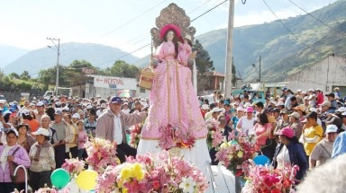
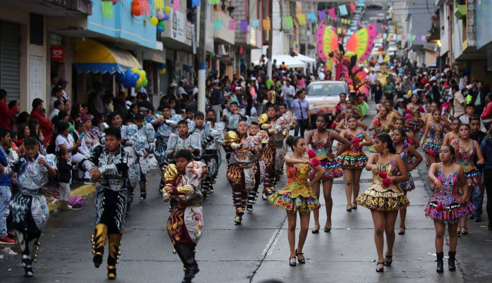
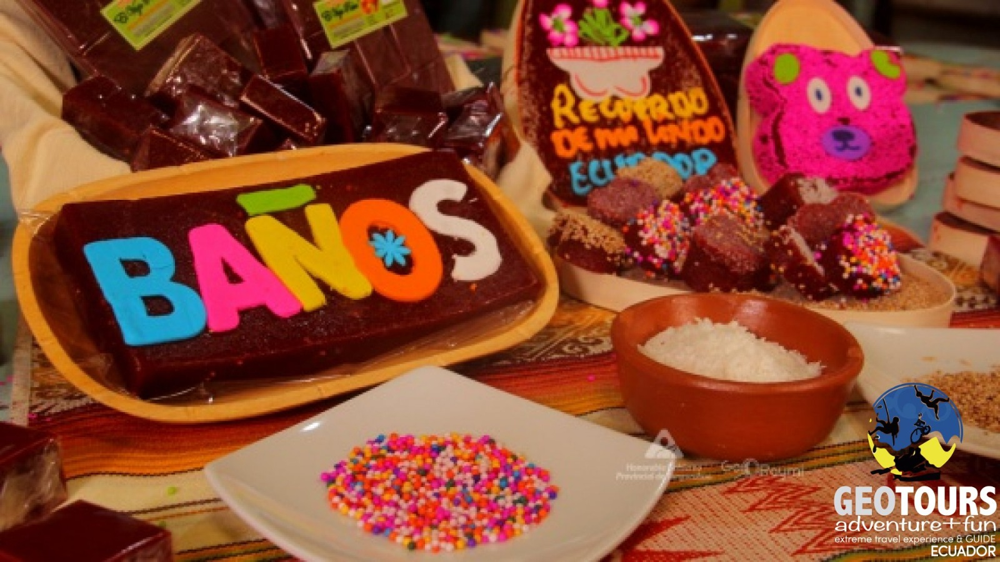

|
Devoción a la Virgen de Agua Santa
Una de las principales costumbres de Baños es la profunda devoción
hacia la Virgen de Agua Santa. Esta figura religiosa es muy querida
por los habitantes del lugar, quienes le atribuyen milagros relacionados
con la protección y sanación. La basílica construida en su honor es centro
de peregrinación y oración y visitantes de todo el país llegan para
agradecerle o pedirle favores, sobre todo relacionados con la salud.

|
Celebraciones y Festividades Anuales
Las celebraciones y festividades en Baños son parte esencial de su
cultura. Durante el año se realizan fiestas religiosas, desfiles,
procesiones y ferias que integran tanto a los ciudadanos como a los
turistas. La más destacada se celebra en octubre en honor a la Virgen,
con juegos pirotécnicos, música tradicional y actos religiosos que
fortalecen el espíritu comunitario.

|
Gastronomía y sus Rituales
La gastronomía en Baños también forma parte de sus costumbres. Es
tradicional ver la preparación de melcochas en las calles, una golosina
típica hecha con panela. Además, el cuy asado y la trucha son platillos
que se preparan en ocasiones especiales o durante fiestas locales.
Compartir estos alimentos con la familia es una muestra de unión y
respeto por las raíces culinarias.

|